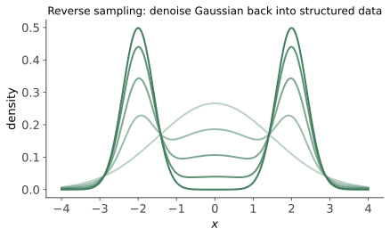
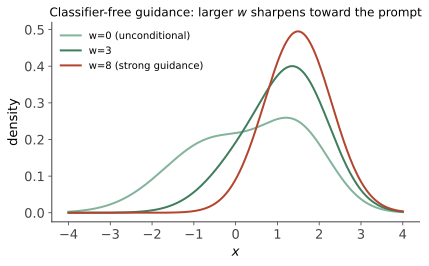

本讲目录
第 03 讲 · 扩散模型 II：采样器与 CFG
上一讲结尾留了两个工程问题：1000 步太慢、文字条件怎么加强。它们的解法分别对应 KSampler 里两组你天天面对的参数：
sampler/scheduler/steps与cfg/负面提示词。本讲把这两块的数学讲透——读完之后，采样器下拉框里那二十几个名字对你就是一张明码标价的菜单，而不是玄学抽签。
1. DDIM：同一个模型，允许跳步
第一个突破（Song et al. 2020）：DDPM 的训练目标只用到了边际分布 \(q(x_t \mid x_0)\)（闭式跳跃公式），根本没用到路径必须一步步走的马尔可夫性。于是可以构造一族新的反向过程——保持每步边际不变，但允许任意步幅。DDIM 的更新式（推导思路：把"预测的谜底"和"指向 \(x_{t'}\) 的噪声方向"重新拼装）：
第一步，先用当前噪声预测反解谜底（第 02 讲闭式跳跃的逆用）：
第二步，用 \(\hat x_0\) 直接"重新加噪"到任意更低的噪声水平 \(t' < t\)：
\(\sigma = 0\) 时整个过程完全确定（同一种子同一张图，无路径噪声）；\(\sigma\) 取 DDPM 的值就退回原版。更重要的是 \(t \to t'\) 可以跨大步：从 1000 步的日程表里抽 20–50 个点走完全程，质量损失很小。"训练一次，采样方式随便换"——这个解耦是后面一切采样器创新的地基。
2. 微分方程视角：采样 = 数值积分

把步长推向无穷小，加噪过程成为一个随机微分方程（SDE）；Song et al. (2021) 证明存在一个概率流 ODE，与它共享每个时刻的边际分布：
这一步转换的含义怎么强调都不过分：生成一张图 = 求解一个常微分方程的初值问题（初值 = 高斯噪声，终点 = 图像）。而数值求解 ODE 是一门发展了一个世纪的成熟学科——欧拉法、Heun 法、多步法、自适应步长……全部武器库瞬间可用。"采样器"的准确定义由此揭晓：
采样器 = 求解这个 ODE/SDE 所用的数值积分格式。
数值分析的常识立刻兑换成生图经验：
- 一阶方法（欧拉）每步误差 \(O(h^2)\)，需要较多步；二阶方法（Heun、DPM++ 2M）每步误差 \(O(h^3)\)，同等质量步数减半——这就是"为什么现代采样器 20–30 步就够，而 DDPM 要上千步"的数学答案；
- DPM-Solver 系（Lu et al. 2022）进一步利用了这个 ODE 的半线性结构（线性部分 \(f(t)x\) 有解析解，只对非线性部分做数值近似），专为扩散定制，效率再上台阶——这就是下拉框里
dpmpp家族霸榜的原因； - ODE vs SDE：确定性求解（ODE 系）收敛快、可复现；随机求解（SDE/ancestral 系）每步重注噪声，误差不累积但永不收敛——步数增加时图会持续变化而非趋于定形。两者不是优劣，是性格。
3. 解码下拉框：sampler
把 ComfyUI sampler_name 下拉框按血统归类（这张表值得放在手边）：
| 下拉框名字 | 数学身份 | 性格与用法 |
|---|---|---|
euler |
概率流 ODE 的欧拉法 | 最朴素可靠的基线，快、稳、可复现 |
euler_ancestral |
欧拉 + 每步重注噪声（祖先采样） | 多样性好、细节"活"，但不收敛、步数敏感 |
heun |
二阶 Heun（每步两次模型调用） | 质量高但每步双倍耗时 |
ddim |
第 1 节的 DDIM | 历史经典，现已被 dpmpp 系实用取代 |
dpmpp_2m |
DPM-Solver++ 二阶多步法 | 通用默认之王：二阶精度却每步只调用一次模型（复用上一步结果） |
dpmpp_2m_sde |
同上的 SDE 版 | 质感更"生动"，不收敛 |
dpmpp_3m_sde |
三阶多步 SDE | 步数多时（30+）质感佳 |
dpmpp_2s_ancestral |
二阶单步 + 祖先噪声 | 动漫社区常见偏好 |
uni_pc |
预测-校正框架 | 极低步数（10 步内）表现好 |
lcm |
蒸馏模型专用（见第 5 节） | 只配 LCM/Turbo 类模型用 |
经验法则一句话：不知道选什么就 dpmpp_2m；想要更"活"的质感换 dpmpp_2m_sde 或 ancestral 系；跑对比实验/要复现则用确定性系（euler/dpmpp_2m）。
4. 解码下拉框：scheduler 与 steps
scheduler 决定的是这几十步在噪声刻度上怎么分布（步子在哪里迈大、哪里迈小）。设噪声水平 \(\sigma\) 从高到低取 \(N\) 个点：
normal：按原训练日程均匀抽点；karras：Karras et al. (2022) 的重分布——用变换 \(\sigma_i = \big(\sigma_{\max}^{1/\rho} + \frac{i}{N-1}(\sigma_{\min}^{1/\rho} - \sigma_{\max}^{1/\rho})\big)^{\rho}\)（\(\rho = 7\)），把步密度向低噪声端倾斜。直觉：高噪声阶段定的是大构图，粗放些无妨；低噪声阶段是细节成形期，误差直接留在成图上，值得多花步数。实测普遍优于均匀，故karras是最常见搭配；exponential/sgm_uniform/beta/simple：其它分布策略，各有适配的模型家族（如 FLUX 常配simple/beta）。
steps 的规律：二阶采样器下 20–30 步是质价比甜点；30 步以上进入收益递减区（确定性采样器的图基本定形，多跑纯属烧电）；10 步以下构图开始崩。配合第 08 讲"固定种子扫参数"你会亲眼看到这三段。
5. CFG：让模型"更听话"的数学

5.1 推导
第 02 讲学的是无条件 score。文生图需要条件版 \(\nabla \log p(x_t \mid c)\)。用贝叶斯公式：
左边那项是"往更符合文字描述的方向"的梯度。Classifier-Free Guidance（Ho & Salimans 2021）的做法：训练时随机丢弃条件（10% 概率把提示词置空），让同一个网络既会条件预测也会无条件预测；采样时把"符合描述的方向"人为放大 \(w\) 倍：
换回噪声预测的语言（KSampler 每步实际执行的公式）：
等价于在采样一个锐化过的分布 \(p_w(x \mid c) \propto p(x)\, p(c \mid x)^w\)——把"像描述"的可能性抬高到 \(w\) 次方。这就是 cfg 参数的全部数学。
5.2 三个立刻打通的实操事实
- 每步跑两次模型：条件一次、无条件一次——CFG 让每步计算翻倍（这是
cfg不为 1 时生成变慢的原因）； - 负面提示词的真身：ComfyUI 把无条件那一路的空提示换成你的负面提示 \(c_-\)，即 \(\tilde\epsilon = \epsilon_\theta(c_-) + w[\epsilon_\theta(c_+) - \epsilon_\theta(c_-)]\)——引导方向变成"从负面拽向正面"。负面提示不是过滤器，是被推离的参照物。这解释了为什么负面词也要认真写；
- \(w\) 的两难：太低（<3）图散漫不贴题；太高（>10）过饱和、对比度爆炸、肢体扭曲——因为 score 被外推出了模型见过的区域。SDXL 甜区 5–7，SD1.5 约 7–9。这不是口诀，是"外推程度"的直接体现。
6. 蒸馏一族：为什么有的模型 cfg 要设 1
LCM、SDXL-Turbo、Lightning、FLUX schnell……这类"4–8 步出图"的模型是蒸馏产物：让学生网络一步学会老师网络多步的输出（一致性模型/对抗蒸馏等路线）。两条使用铁律由此而来：步数按它说的来（蒸馏时钉死的，多跑反而坏）；cfg 设 1 附近（引导已在蒸馏时"烘焙"进权重，再叠 CFG 等于双重放大，直接过曝）。遇到"步数极少的模型"先查它的推荐参数，不适用本讲的通用甜区。
7. 速查：这台机器上的推荐组合
| 场景（你的模型） | sampler | scheduler | steps | cfg |
|---|---|---|---|---|
| SDXL base 文生图 | dpmpp_2m |
karras |
25–30 | 5–7 |
| SDXL 探索多样性 | dpmpp_2m_sde / euler_ancestral |
karras |
28–35 | 5–7 |
| SD1.5 文生图 | dpmpp_2m |
karras |
25 | 7–8 |
| 参数对比实验 | euler 或 dpmpp_2m（确定性） |
karras |
25 | 固定 |
| 将来装蒸馏模型 | 按模型页说明 | 按说明 | 4–8 | ~1 |
本讲小结
| 概念 | 一句话 |
|---|---|
| DDIM | 训练只约束边际 ⇒ 采样可跳步、可确定化 |
| 概率流 ODE | 生成 = 解 ODE 初值问题；采样器 = 数值积分格式 |
| 二阶方法 | 每步误差 \(O(h^3)\)，20–30 步顶 DDPM 千步 |
| ancestral/SDE | 每步重注噪声：多样但不收敛 |
| karras 日程 | 步密度向低噪声端倾斜：细节期多花步数 |
| CFG | \(\epsilon_{\varnothing} + w(\epsilon_c - \epsilon_{\varnothing})\)：锐化 \(p(c\mid x)^w\)，每步双倍计算 |
| 负面提示 | 替换无条件参照：从 \(c_-\) 拽向 \(c_+\) |
| 蒸馏模型 | 步数与引导已烘焙：低步数 + cfg≈1 |
原理篇还剩一块拼图：这个"猜噪声的网络"到底长什么样？为什么 SD 在"潜空间"而不是像素上扩散？checkpoint 文件里除了 U-Net 还打包了什么？下一讲拆开整机看零件——这也是看懂 ComfyUI 模型加载节点的直接前置。